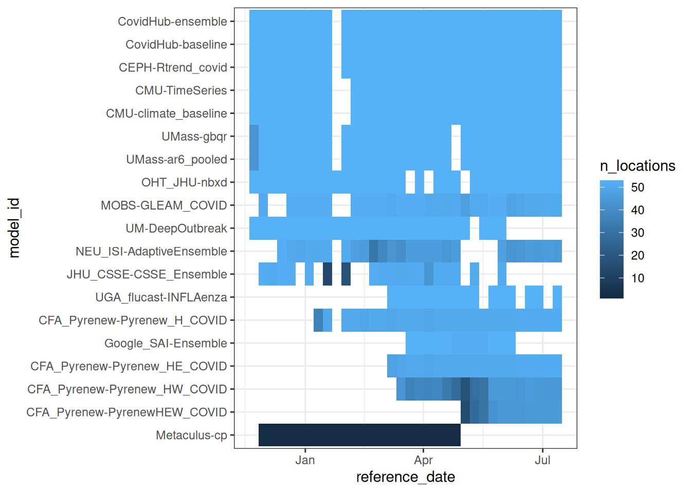
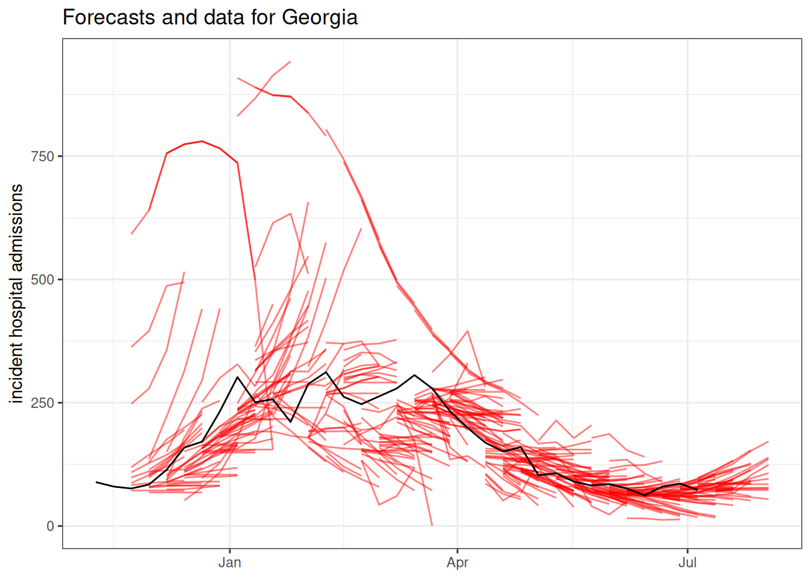
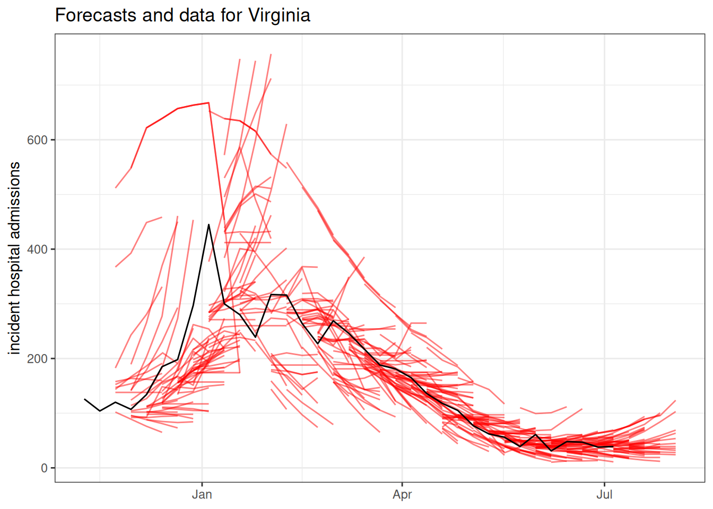
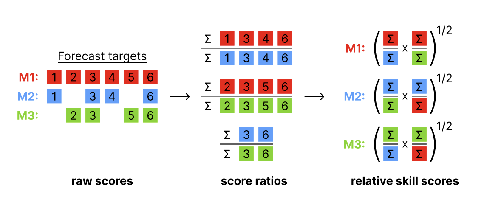
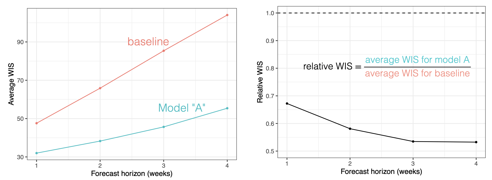

library("nfidd")
library("dplyr")
library("ggplot2")
library("hubData")
library("hubUtils")
library("hubEvals")
library("hubEnsembles")
theme_set(theme_bw())Evaluating real-world outbreak forecasts
Introduction
So far in this course we have focused on building, visualising, evaluating, and combining “toy” forecast models in somewhat synthetic settings. In this session you will work with real forecasts from an existing modeling hub. This will expose many of the challenges involved with real-time forecasting, as well as the benefits of coordinated modeling efforts.
Slides
Objectives
The aim of this session is to develop advanced skills in working with real forecasts and an appreciation for the challenges of real-time forecasting.
Setup
Source file
The source file of this session is located at sessions/real-world-forecasts.qmd.
Libraries used
In this session we will use the nfidd package to access some stored datasets, the dplyr package for data wrangling, the ggplot2 library for plotting, and the following hubverse packages: hubData, hubUtils, hubEvals and hubEnsembles.
Tip
The best way to interact with the material is via the Visual Editor of RStudio.
Initialisation
We set a random seed for reproducibility. Setting this ensures that you should get exactly the same results on your computer as we do. This is not strictly necessary but will help us talk about the models.
set.seed(5050) # for Shohei Ohtani!Introduction to the US COVID-19 Forecast Hub
The US COVID-19 Forecast Hub is a collaborative epidemiological forecasting project that started in April 2020. From 2020 through summer 2024, the project was hosted by the Reich Lab at UMass-Amherst. The short-term forecasts were published on the US CDC website as the official forecasts of record from the federal government.
During this time, the project collected over 9,000 forecast submissions from 130 models. The project collected nearly 1 billion rows of model output data, and has led to multiple research papers on epidemiological forecasting.(Ray et al. 2023; Cramer et al. 2022; Fox et al. 2024; Kim, Ray, and Reich 2024)
The project paused forecasting during the 2024 summer, and restarted in late fall 2024 under the purview of the US CDC Centers for Forecasting and Outbreak Analytics (CFA). When it re-started, the hub was launched using hubverse-style forecast guidelines. The public dashboard for the COVID-19 Forecast Hub has an up-to-date record of the forecasts submitted.
In this session, we will access and analyse forecasts from the CFA-run US COVID-19 Forecast Hub.
Take 5 minutes
Browse the current US COVID-19 Forecast Hub Dashboard. Write down three observations that are interesting or surprising to you. Share them with your neighbor(s) and listen to their observations.
Forecast dimensions
Here are some details about the structure of the COVID-19 Forecast Hub project.
- Forecasts are collected every week, with submissions due on Wednesdays.
- Teams make predictions of -1 through 3 week ahead counts of new hospital admissions due to COVID-19.
- The ground truth data (“target data” in hubverse lingo) is taken from the Weekly Hospital Respiratory Data (HRD) Metrics by Jurisdiction, National Healthcare Safety Network (NHSN) dataset.
- Teams may forecast for up to 53 locations, including the US national level, all 50 states, plus Puerto Rico and Washington DC.
- Forecasts are solicited in a quantile format.
Further details about the hub are available at its GitHub README page.
The forecasts
We will start by accessing forecast data from the COVID-19 Forecast Hub. Because the hub takes advantage of hubverse cloud data storage architecture, both the forecast and target data are stored in an S3 bucket that can be accessed using the hubData R package.
Tip
For a complete list of hubs (many of which have public data available) check out the hubverse list of hubs.
Accessing forecast data from the cloud
The following code can be used to retrieve covid forecasts from the cloud. However, there are over 2 million rows of data, and it can take some bandwidth to download. To make these results more reproducible and to provide a snapshot of the data, we also provide the forecasts as a data object that can be loaded directly from the nfidd package.
hub_path_cloud <- hubData::s3_bucket("s3://covid19-forecast-hub")
hub_con_cloud <- hubData::connect_hub(hub_path_cloud, skip_checks = TRUE)
data(covid_locations)
covid_forecasts <- hub_con_cloud |>
filter(
output_type == "quantile",
target == "wk inc covid hosp",
horizon >= 0
) |>
collect() |>
left_join(covid_locations)This line of code will load all the forecasts saved in the package into your R session.
data(covid_forecasts)Accessing target data from the cloud
Here is code to query the time-series data from the cloud-based hub.
covid_time_series <- connect_target_timeseries(hub_path_cloud) |>
filter(target == "wk inc covid hosp") |>
collect() |>
left_join(covid_locations)However, to ensure reproducibility (since this is a live dataset), we have downloaded this object for you already as of July 9, 2025, and it is available to load in from the course R package directly.
data(covid_time_series)Exploratory data analysis and visualization
Now that we’ve downloaded the forecast and target data, let’s just do a few basic explorations to make sure we understand the dimensions of our data. Ideally, storing data in the hubverse ensures that the data is “clean”, no typos in targets or locations, no missing quantile levels, no negative predictions, etc… But let’s start by just getting a sense of how many unique values we have for location, horizon, target_end_date, etc…
unique_per_column <- covid_forecasts |>
select(-value) |>
purrr::map(~ sort(unique(.x)))
unique_per_column$reference_date
[1] "2024-11-23" "2024-11-30" "2024-12-07" "2024-12-14" "2024-12-21"
[6] "2024-12-28" "2025-01-04" "2025-01-11" "2025-01-18" "2025-01-25"
[11] "2025-02-01" "2025-02-08" "2025-02-15" "2025-02-22" "2025-03-01"
[16] "2025-03-08" "2025-03-15" "2025-03-22" "2025-03-29" "2025-04-05"
[21] "2025-04-12" "2025-04-19" "2025-04-26" "2025-05-03" "2025-05-10"
[26] "2025-05-17" "2025-05-24" "2025-05-31" "2025-06-07" "2025-06-14"
[31] "2025-06-21" "2025-06-28" "2025-07-05" "2025-07-12"
$location
[1] "01" "02" "04" "05" "06" "08" "09" "10" "11" "12" "13" "15" "16" "17" "18"
[16] "19" "20" "21" "22" "23" "24" "25" "26" "27" "28" "29" "30" "31" "32" "33"
[31] "34" "35" "36" "37" "38" "39" "40" "41" "42" "44" "45" "46" "47" "48" "49"
[46] "50" "51" "53" "54" "55" "56" "72" "US"
$horizon
[1] 0 1 2 3
$target_end_date
[1] "2024-11-23" "2024-11-30" "2024-12-07" "2024-12-14" "2024-12-21"
[6] "2024-12-28" "2025-01-04" "2025-01-11" "2025-01-18" "2025-01-25"
[11] "2025-02-01" "2025-02-08" "2025-02-15" "2025-02-22" "2025-03-01"
[16] "2025-03-08" "2025-03-15" "2025-03-22" "2025-03-29" "2025-04-05"
[21] "2025-04-12" "2025-04-19" "2025-04-26" "2025-05-03" "2025-05-10"
[26] "2025-05-17" "2025-05-24" "2025-05-31" "2025-06-07" "2025-06-14"
[31] "2025-06-21" "2025-06-28" "2025-07-05" "2025-07-12" "2025-07-19"
[36] "2025-07-26" "2025-08-02"
$target
[1] "wk inc covid hosp"
$output_type
[1] "quantile"
$output_type_id
[1] "0.01" "0.025" "0.05" "0.1" "0.15" "0.2" "0.25" "0.3" "0.35"
[10] "0.4" "0.45" "0.5" "0.55" "0.6" "0.65" "0.7" "0.75" "0.8"
[19] "0.85" "0.9" "0.95" "0.975" "0.99"
$model_id
[1] "CEPH-Rtrend_covid" "CFA_Pyrenew-Pyrenew_H_COVID"
[3] "CFA_Pyrenew-Pyrenew_HE_COVID" "CFA_Pyrenew-Pyrenew_HW_COVID"
[5] "CFA_Pyrenew-PyrenewHEW_COVID" "CMU-climate_baseline"
[7] "CMU-TimeSeries" "CovidHub-baseline"
[9] "CovidHub-ensemble" "Google_SAI-Ensemble"
[11] "JHU_CSSE-CSSE_Ensemble" "Metaculus-cp"
[13] "MOBS-GLEAM_COVID" "NEU_ISI-AdaptiveEnsemble"
[15] "OHT_JHU-nbxd" "UGA_flucast-INFLAenza"
[17] "UM-DeepOutbreak" "UMass-ar6_pooled"
[19] "UMass-gbqr"
$abbreviation
[1] "AK" "AL" "AR" "AZ" "CA" "CO" "CT" "DC" "DE" "FL" "GA" "HI" "IA" "ID" "IL"
[16] "IN" "KS" "KY" "LA" "MA" "MD" "ME" "MI" "MN" "MO" "MS" "MT" "NC" "ND" "NE"
[31] "NH" "NJ" "NM" "NV" "NY" "OH" "OK" "OR" "PA" "PR" "RI" "SC" "SD" "TN" "TX"
[46] "US" "UT" "VA" "VT" "WA" "WI" "WV" "WY"
$location_name
[1] "Alabama" "Alaska" "Arizona"
[4] "Arkansas" "California" "Colorado"
[7] "Connecticut" "Delaware" "District of Columbia"
[10] "Florida" "Georgia" "Hawaii"
[13] "Idaho" "Illinois" "Indiana"
[16] "Iowa" "Kansas" "Kentucky"
[19] "Louisiana" "Maine" "Maryland"
[22] "Massachusetts" "Michigan" "Minnesota"
[25] "Mississippi" "Missouri" "Montana"
[28] "Nebraska" "Nevada" "New Hampshire"
[31] "New Jersey" "New Mexico" "New York"
[34] "North Carolina" "North Dakota" "Ohio"
[37] "Oklahoma" "Oregon" "Pennsylvania"
[40] "Puerto Rico" "Rhode Island" "South Carolina"
[43] "South Dakota" "Tennessee" "Texas"
[46] "US" "Utah" "Vermont"
[49] "Virginia" "Washington" "West Virginia"
[52] "Wisconsin" "Wyoming"
$population
[1] 578759 623989 705749 731545 762062 884659 973764
[8] 1059361 1068778 1344212 1359711 1415872 1787065 1792147
[15] 1934408 2096829 2913314 2976149 3017804 3080156 3155070
[22] 3205958 3565287 3754939 3956971 4217737 4467673 4648794
[29] 4903185 5148714 5639632 5758736 5822434 6045680 6626371
[36] 6732219 6829174 6892503 7278717 7614893 8535519 8882190
[43] 9986857 10488084 10617423 11689100 12671821 12801989 19453561
[50] 21477737 28995881 39512223 332875137From the above, we can see that
- the forecasts were made every week from 2024-11-23 until 2025-07-12,
- there is just one target, the weekly counts of hospital admissions due to COVID-19, and we only have quantile values for it,
- we have forecasts for horizons 0 to 3 weeks,
- there are 23 quantile levels present in the data,
- there are 19 models.
Let’s just do a quick visualization of forecasts from one week to make sure we understand the structure of what one date and location’s worth of forecasts look like.
covid_forecasts |>
filter(reference_date == "2025-02-15", abbreviation == "GA") |>
hubVis::plot_step_ahead_model_output(
target_data = covid_time_series |>
filter(as_of == as.Date("2025-07-09"),
abbreviation == "GA"),
use_median_as_point = TRUE,
x_col_name = "target_end_date",
x_target_col_name = "date",
pal_color = "Set3",
title = "Weekly hospitalizations due to COVID-19 (data and forecasts)"
)Warning: ! `model_out_tbl` must be a `model_out_tbl`. Class applied by defaultWarning: ! `model_out_tbl` contains more than 5 models, the plot will be reduced to show
only one interval (the maximum interval value): "0.95"Warning: ! `output_type_id` column must be a numeric. Converting to numeric.
Tip
Take a moment to explore the forecasts interactively in the above plot. We suggest starting by double-clicking on the “target” line in the legend. This will remove all models from the plot. Then add the models one at a time to compare them.
Who submitted when?
One thing that can foul up evaluation and ensembles of models is when not all models submit at the same times.
Do all models in our dataset of forecasts have the same number of predictions? Let’s look at this a few different ways.
Here is a tabular summary showing some summary stats about how often and how much each model submitted:
covid_forecasts |>
group_by(model_id) |>
summarise(
n_submissions = n_distinct(reference_date),
n_rows = n(),
n_horizons = n_distinct(horizon),
n_locations = n_distinct(location)
) |>
arrange(-n_submissions) |>
knitr::kable()| model_id | n_submissions | n_rows | n_horizons | n_locations |
|---|---|---|---|---|
| CEPH-Rtrend_covid | 33 | 160908 | 4 | 53 |
| CovidHub-baseline | 33 | 160908 | 4 | 53 |
| CovidHub-ensemble | 33 | 160908 | 4 | 53 |
| CMU-TimeSeries | 32 | 156032 | 4 | 53 |
| CMU-climate_baseline | 32 | 156032 | 4 | 53 |
| UMass-ar6_pooled | 32 | 155112 | 4 | 53 |
| UMass-gbqr | 32 | 155112 | 4 | 53 |
| OHT_JHU-nbxd | 31 | 151156 | 4 | 53 |
| MOBS-GLEAM_COVID | 29 | 136068 | 4 | 52 |
| UM-DeepOutbreak | 27 | 131652 | 4 | 53 |
| CFA_Pyrenew-Pyrenew_H_COVID | 26 | 59202 | 2 | 51 |
| NEU_ISI-AdaptiveEnsemble | 26 | 104995 | 4 | 53 |
| Metaculus-cp | 22 | 966 | 4 | 1 |
| CFA_Pyrenew-Pyrenew_HE_COVID | 19 | 43746 | 2 | 51 |
| JHU_CSSE-CSSE_Ensemble | 19 | 82340 | 4 | 52 |
| CFA_Pyrenew-Pyrenew_HW_COVID | 18 | 31694 | 2 | 48 |
| UGA_flucast-INFLAenza | 16 | 78016 | 4 | 53 |
| Google_SAI-Ensemble | 12 | 58144 | 4 | 53 |
| CFA_Pyrenew-PyrenewHEW_COVID | 11 | 19642 | 2 | 47 |
And here is a visual showing more details about submissions each week by model, sorted with the models with the most forecasts at the top. Each tile represents a week, with lighter blue colors in a given model-week indicating a higher number of locations being submitted for.
covid_forecasts |>
group_by(model_id, reference_date) |>
summarise(
n_rows = n(),
n_locations = n_distinct(location)
) |>
ungroup() |>
mutate(model_id = reorder(model_id, n_rows, FUN = sum)) |>
ggplot() +
geom_tile(aes(x = reference_date, y = model_id, fill = n_locations))`summarise()` has grouped output by 'model_id'. You can override using the
`.groups` argument.
Take 2 minutes
What are some reasons you can imagine for a model not being submitted in a given week?
Solution
Here are some real examples of why models have not been submitted in a given week:
- The target dataset is not released (as was the case one week in January 2025).
- The modeler who runs the model every week is sick or on vacation.
- A model may have joined mid-season because it was still in development.
- A model have have gone offline because a team stopped participating.
- The modeling team may be unhappy with their forecast and decide not to submit (for evaluation of the model vs the modeling team this can be a big problem).
- … (there are likely other reasons too)
What are the models?
What is a baseline model?
Baseline models generate forecasts that are created to serve as benchmarks. They are designed to be naive, not overly “optimized” approaches that make forecasts. In evaluation, baseline models may occasionally do well by chance (for example, a flat line model may do well when dynamics are, well, flat). But in general, their forecasts should be “beatable” by models that are able to learn and make predictions based on dynamics in the data. The Random Walk (rw) model from the Forecast Evaluation session is a good example of a baseline model. Other models that might serve as slightly more sophisticated forecast baselines could be a simple ARIMA model, or a model that smooths the recent data and predicts the a continuation of a recent trend in the data.
You can read about each of the models in the model-metadata folder of the forecast hub. Model metadata can also be programmatically accessed using hubData::load_model_metadata(). There are a wide variety of models submitted to this hub.
Tip
Here are a few models that we will highlight with their provided descriptions before going further:
This is the hub-generated ensemble forecast:
- CovidHub-ensemble: “Median-based ensemble of quantile forecasts submissions.” Note this is similar to the ensembles we introduced in the ensembles session.
Here are two models that have been explicitly designed as “baselines” or benchmarks:
- CovidHub-baseline: Flat baseline model. The most observed value from the target dataset is the median forward projection. Prospective uncertainty is based on the preceding timeseries.” (This is kind of like the
rwmodel from previous sessions.) - CMU-climate_baseline: “Using data from 2022 onwards, the climatological model uses samples from the 7 weeks centered around the target week and reference week to form the quantiles for the target week, as one might use climate information to form a meteorological forecast. To get more variation at some potential issue of generalization, one can form quantiles after aggregating across geographic values as well as years (after converting to a rate based case count). This model uses a simple average of the geo-specific quantiles and the geo-aggregated quantiles.” (This is kind of like our
fouriermodel from previous sessions.)
Here are two models built by InsightNet-funded teams:
- UMass-ar6_pooled: “AR(6) model after fourth root data transform. AR coefficients are shared across all locations. A separate variance parameter is estimated for each location.”
- MOBS-GLEAM_COVID: “Metapopulation, age structured SLIR model. … The GLEAM framework is based on a metapopulation approach in which the US is divided into geographical subpopulations. Human mobility between subpopulations is represented on a network. … Superimposed on the US population and mobility layers is an compartmental epidemic model that defines the infection and population dynamics.”
Take 2 minutes
Browse through some of the other model descriptions. Which ones look interesting to you and why? Discuss with your neighbor.
Evaluating forecasts
To quantitatively evaluate the forecasts, we will need the “oracle output” data. Recall that this is the “ground truth” (or target) data, formatted like it were being predicted by a future-seeing model. Here is code to build oracle-output data from the time-series target data.
covid_oracle_output <- covid_time_series |>
filter(as_of == as.Date("2025-07-09")) |>
select(target,
location,
target_end_date = date,
oracle_value = observation) Visual evaluation
Even though we have probabilistic forecasts, sometimes it is just easier to look at the point forecasts when trying to look at a lot of forecasts. Here is a plot showing all the point forecasts (the median from the quantile forecasts) for one state. The forecasts are in red and the black line shows the observed data.
covid_forecasts |>
filter(output_type_id == 0.5,
abbreviation == "GA") |>
ggplot() +
geom_line(aes(x = target_end_date,
y = value,
group = interaction(reference_date, model_id)),
alpha = 0.5,
color = "red") +
geom_line(data = filter(covid_time_series,
abbreviation == "GA",
as_of == "2025-07-09"),
aes(x = date,
y = observation))+
ggtitle("Forecasts and data for Georgia") +
ylab("incident hospital admissions") +
xlab(NULL)
covid_forecasts |>
filter(output_type_id == 0.5,
abbreviation == "VA") |>
ggplot() +
geom_line(aes(x = target_end_date,
y = value,
group = interaction(reference_date, model_id)),
alpha = 0.5,
color = "red") +
geom_line(data = filter(covid_time_series,
abbreviation == "VA",
as_of == "2025-07-09"),
aes(x = date,
y = observation))+
ggtitle("Forecasts and data for Virginia") +
ylab("incident hospital admissions") +
xlab(NULL)
The forecasts can be interactively explored at the COVID-19 Forecast Hub Dashboard.
Overall model comparison
We will start our quantitative analysis with an overall evaluation of the models, using, as we did in earlier sessions, hubEvals. We will use the Weighted Interval Score (WIS) as our primary metric of interest as we did in the session on Forecast Ensembles.
scores <- score_model_out(
covid_forecasts,
covid_oracle_output
)ℹ Some rows containing NA values may be removed. This is fine if not
unexpected.scores |>
arrange(wis) |>
knitr::kable(digits = 3)| model_id | wis | overprediction | underprediction | dispersion | bias | interval_coverage_50 | interval_coverage_90 | ae_median |
|---|---|---|---|---|---|---|---|---|
| CFA_Pyrenew-PyrenewHEW_COVID | 7.566 | 2.740 | 1.690 | 3.136 | 0.069 | 0.503 | 0.875 | 11.987 |
| CFA_Pyrenew-Pyrenew_HW_COVID | 11.988 | 1.551 | 4.163 | 6.275 | -0.127 | 0.575 | 0.932 | 17.033 |
| CFA_Pyrenew-Pyrenew_HE_COVID | 15.643 | 3.957 | 4.749 | 6.937 | -0.033 | 0.511 | 0.887 | 23.709 |
| UGA_flucast-INFLAenza | 19.607 | 4.729 | 5.098 | 9.779 | 0.084 | 0.531 | 0.910 | 30.682 |
| Google_SAI-Ensemble | 25.710 | 7.096 | 12.936 | 5.678 | -0.078 | 0.432 | 0.850 | 35.452 |
| CFA_Pyrenew-Pyrenew_H_COVID | 40.732 | 8.706 | 15.243 | 16.782 | -0.205 | 0.530 | 0.898 | 62.741 |
| CovidHub-ensemble | 41.166 | 6.813 | 14.184 | 20.169 | -0.100 | 0.561 | 0.909 | 62.543 |
| UMass-ar6_pooled | 47.129 | 11.030 | 16.047 | 20.051 | 0.023 | 0.576 | 0.916 | 70.351 |
| UMass-gbqr | 51.002 | 6.195 | 30.430 | 14.377 | -0.100 | 0.459 | 0.836 | 74.142 |
| CEPH-Rtrend_covid | 52.582 | 7.454 | 21.806 | 23.322 | -0.231 | 0.463 | 0.825 | 81.899 |
| OHT_JHU-nbxd | 57.426 | 6.205 | 36.073 | 15.148 | -0.212 | 0.349 | 0.685 | 86.601 |
| CovidHub-baseline | 59.678 | 11.839 | 27.006 | 20.833 | -0.070 | 0.627 | 0.848 | 80.823 |
| NEU_ISI-AdaptiveEnsemble | 59.836 | 20.368 | 19.107 | 20.361 | -0.079 | 0.357 | 0.700 | 92.284 |
| CMU-TimeSeries | 63.432 | 23.031 | 9.323 | 31.078 | -0.052 | 0.508 | 0.900 | 92.438 |
| JHU_CSSE-CSSE_Ensemble | 64.317 | 19.601 | 18.537 | 26.179 | -0.068 | 0.485 | 0.811 | 91.388 |
| MOBS-GLEAM_COVID | 64.494 | 13.450 | 35.783 | 15.261 | -0.349 | 0.303 | 0.638 | 96.427 |
| UM-DeepOutbreak | 71.665 | 15.181 | 13.954 | 42.530 | 0.008 | 0.639 | 0.940 | 96.881 |
| CMU-climate_baseline | 130.380 | 61.793 | 3.076 | 65.511 | 0.455 | 0.492 | 0.934 | 229.489 |
| Metaculus-cp | 1315.161 | 77.497 | 281.803 | 955.862 | -0.190 | 0.690 | 1.000 | 1657.442 |
Take 2 minutes
Should we trust the results in this table to give us a reliable ranking for all of the forecasts? Why or why not?
Solution
Because there are so many missing forecasts, this single summary is not reliable. We will need a more careful comparison to determine relative rankings of models.
Recall, here is the summary of which models submitted when. There is a lot of variation in how much each model submitted!
covid_forecasts |>
group_by(model_id) |>
summarise(
n_submissions = n_distinct(reference_date),
n_rows = n(),
n_horizons = n_distinct(horizon),
n_locations = n_distinct(location)
) |>
arrange(-n_submissions) |>
knitr::kable()| model_id | n_submissions | n_rows | n_horizons | n_locations |
|---|---|---|---|---|
| CEPH-Rtrend_covid | 33 | 160908 | 4 | 53 |
| CovidHub-baseline | 33 | 160908 | 4 | 53 |
| CovidHub-ensemble | 33 | 160908 | 4 | 53 |
| CMU-TimeSeries | 32 | 156032 | 4 | 53 |
| CMU-climate_baseline | 32 | 156032 | 4 | 53 |
| UMass-ar6_pooled | 32 | 155112 | 4 | 53 |
| UMass-gbqr | 32 | 155112 | 4 | 53 |
| OHT_JHU-nbxd | 31 | 151156 | 4 | 53 |
| MOBS-GLEAM_COVID | 29 | 136068 | 4 | 52 |
| UM-DeepOutbreak | 27 | 131652 | 4 | 53 |
| CFA_Pyrenew-Pyrenew_H_COVID | 26 | 59202 | 2 | 51 |
| NEU_ISI-AdaptiveEnsemble | 26 | 104995 | 4 | 53 |
| Metaculus-cp | 22 | 966 | 4 | 1 |
| CFA_Pyrenew-Pyrenew_HE_COVID | 19 | 43746 | 2 | 51 |
| JHU_CSSE-CSSE_Ensemble | 19 | 82340 | 4 | 52 |
| CFA_Pyrenew-Pyrenew_HW_COVID | 18 | 31694 | 2 | 48 |
| UGA_flucast-INFLAenza | 16 | 78016 | 4 | 53 |
| Google_SAI-Ensemble | 12 | 58144 | 4 | 53 |
| CFA_Pyrenew-PyrenewHEW_COVID | 11 | 19642 | 2 | 47 |
In real-world forecasting hubs, it is very common to have missing forecasts, and it probably isn’t safe to assume that these forecasts are “missing at random”. For example, some teams may choose not to submit forecasts when their model’s algorithm fails to converge, signaling a particularly difficult phase of the outbreak to predict—while others, consciously or not, submit during these periods and receive lower scores.
Additional metrics
Before we dig further into the evaluation, let’s introduce a few additional evaluation metrics and ideas.
Relative scores
Relative skill scores are a way to create “head-to-head” comparisons of models that to some extent are able to adjust for the difficulty of the predictions made by each model. Here is a figure showing how the relative scores are calculated, based on aggregated pairwise comparisons between each pair of models.

Interpreting relative skill
The interpretation of the relative skill metric is the factor by which the score for a given model is more or less accurate than the average model, adjusting for the difficulty of the forecasts made by that particular model. Relative skill scores that are lower than 1 indicate that the model is more accurate on the whole than the average model evaluated. For example, a 0.9 relative WIS skill for model A suggests that model A was 10% more accurate on average than other models, adjusting for the difficulty level of forecasts made by model A.

This metric (or a version of it) has been used in practice in a number of large-scale forecast evaluation research papers.(Cramer et al. 2022; Meakin et al. 2022; Sherratt et al. 2023; Wolffram et al. 2023) The general rule of thumb is that it does a reasonable job comparing models where there is never less than, say, 50% overlap in the targets predicted by any pair of models.
Here is a table of relative skill scores for WIS.
score_model_out(
covid_forecasts,
covid_oracle_output,
metrics = "wis",
relative_metrics = "wis"
) |>
arrange(wis_relative_skill)ℹ Some rows containing NA values may be removed. This is fine if not
unexpected.Warning in wilcox.test.default(values_x, values_y, paired = TRUE): cannot
compute exact p-value with tiesKey: <model_id>
model_id wis wis_relative_skill
<char> <num> <num>
1: CFA_Pyrenew-Pyrenew_HE_COVID 15.643224 0.6617223
2: UGA_flucast-INFLAenza 19.606728 0.6992593
3: CovidHub-ensemble 41.165853 0.7351364
4: CFA_Pyrenew-PyrenewHEW_COVID 7.565851 0.7683668
5: UMass-ar6_pooled 47.128999 0.8615963
6: UMass-gbqr 51.001652 0.9039621
7: CEPH-Rtrend_covid 52.582203 0.9575737
8: NEU_ISI-AdaptiveEnsemble 59.836005 0.9580200
9: OHT_JHU-nbxd 57.425689 0.9616374
10: CovidHub-baseline 59.678144 1.0116854
11: CMU-TimeSeries 63.431791 1.0140982
12: CFA_Pyrenew-Pyrenew_HW_COVID 11.988136 1.0340812
13: Metaculus-cp 1315.160817 1.0370798
14: JHU_CSSE-CSSE_Ensemble 64.317330 1.0621682
15: Google_SAI-Ensemble 25.710362 1.0696303
16: CFA_Pyrenew-Pyrenew_H_COVID 40.731989 1.1823656
17: MOBS-GLEAM_COVID 64.493753 1.2589497
18: UM-DeepOutbreak 71.664888 1.2608713
19: CMU-climate_baseline 130.379998 2.3539375Note that the ordering of the wis column does not align perfectly with the wis_relative_skill column. This is due to the “adjustment” of the relative skill based on which forecasts were made by each model.
To make a more fair comparison, let’s subset to only include models that have submitted at least 60% of the maximum possible number of predictions for the season.
## 33 dates, 4 horizons, 53 locations, 60%
threshold_60pct <- 33 * 4 * 53 * 0.6
model_subset <- covid_forecasts |>
filter(output_type_id == 0.5) |>
group_by(model_id) |>
summarize(targets = n()) |>
filter(targets > threshold_60pct) |>
pull(model_id)
covid_forecasts |>
filter(model_id %in% model_subset) |>
score_model_out(
covid_oracle_output,
metrics = "wis",
relative_metrics = "wis"
) |>
arrange(wis_relative_skill)ℹ Some rows containing NA values may be removed. This is fine if not
unexpected.Key: <model_id>
model_id wis wis_relative_skill
<char> <num> <num>
1: CovidHub-ensemble 41.16585 0.6952576
2: UMass-ar6_pooled 47.12900 0.8067576
3: UMass-gbqr 51.00165 0.8734806
4: CEPH-Rtrend_covid 52.58220 0.8871788
5: NEU_ISI-AdaptiveEnsemble 59.83600 0.8967471
6: OHT_JHU-nbxd 57.42569 0.9010345
7: CovidHub-baseline 59.67814 0.9715371
8: CMU-TimeSeries 63.43179 1.0355758
9: UM-DeepOutbreak 71.66489 1.0776110
10: MOBS-GLEAM_COVID 64.49375 1.2025614
11: CMU-climate_baseline 130.38000 2.1838601
Take 5 minutes
Looking at the relative and absolute WIS scores from the table above, and the number of total forecasts for each model, what are some of your take-aways from the analysis above?
Solution
- The ensemble forecast is the most accurate model overall, by fairly large margin, close to 20% in terms of absolute WIS and 10% in terms of relative skill.
- The CovidHub-baseline has basically “average” performance, with a relative WIS score of 0.96.
- Five individual models have better performance than the baseline and four have worse performance than the baseline.
- The worst-performing model is the
CMU-climate_baseline. This is designed to be a “seasonal average” model, and covid isn’t that seasonal at the moment, so it’s not super surprising that this is a bad model. - Tying back to approaches from the Renewal equation session:
- The
CEPH-Rtrend_covidmodel is “A renewal equation method based on Bayesian estimation of Rt from hospitalization data.” It wasn’t as good as pure statistical and ML approaches, but was better than the baseline. - The
MOBS-GLEAM_COVIDmodel is a mechanistic model (see description above) and was worse than the baseline.
- The
Since the counts at the national level are likely to dominate the absolute scale of average WIS scores, you could make an argument to subset to only the states and evaluate based on that. Here is the analysis above, on that subset:
covid_forecasts |>
filter(model_id %in% model_subset,
location != "US") |>
score_model_out(
covid_oracle_output,
metrics = "wis",
relative_metrics = "wis"
) |>
arrange(wis_relative_skill)ℹ Some rows containing NA values may be removed. This is fine if not
unexpected.Key: <model_id>
model_id wis wis_relative_skill
<char> <num> <num>
1: CovidHub-ensemble 25.64862 0.7289393
2: UMass-ar6_pooled 28.95864 0.8191001
3: UMass-gbqr 29.05540 0.8218274
4: CEPH-Rtrend_covid 31.83277 0.9039557
5: CovidHub-baseline 34.29734 0.9441114
6: CMU-TimeSeries 33.94338 0.9589511
7: OHT_JHU-nbxd 36.27410 0.9644199
8: NEU_ISI-AdaptiveEnsemble 39.92454 1.0457292
9: UM-DeepOutbreak 41.43688 1.0521645
10: MOBS-GLEAM_COVID 36.18229 1.1470630
11: CMU-climate_baseline 71.84392 2.0458225The results above haven’t changed much, although the CMU-TimeSeries and OHT_JHU-nbxd swapped places in the final rankings.
Log-scale scores
We can also score on the logarithmic scale. This can be useful if we are interested in the relative performance of the model at different scales of the data, for example if we are interested in the model’s performance at capturing the exponential growth phase of the epidemic.(Bosse et al. 2023) In some sense, scoring in this way can be an approximation of scoring the effective reproduction number estimates. Doing this directly can be difficult as the effective reproduction number is a latent variable and so we cannot directly score it. Additionally, it can make sense to score a target (and make it easier to compare scores) when the variance of the scores is stabilized.
To implement the log-scale scoring, we can simply log-transform the observations and forecasted values (with an offset, to account for zeroes in the data).
covid_forecasts |>
filter(model_id %in% model_subset) |>
mutate(value = log(value+1)) |>
score_model_out(
covid_oracle_output |>
mutate(oracle_value = log(oracle_value+1)),
metrics = "wis",
relative_metrics = "wis"
) |>
arrange(wis_relative_skill)ℹ Some rows containing NA values may be removed. This is fine if not
unexpected.Key: <model_id>
model_id wis wis_relative_skill
<char> <num> <num>
1: CovidHub-ensemble 0.1935312 0.7189940
2: UMass-gbqr 0.2188057 0.8143009
3: CMU-TimeSeries 0.2228692 0.8209956
4: UMass-ar6_pooled 0.2285401 0.8474079
5: CEPH-Rtrend_covid 0.2588151 0.9592896
6: OHT_JHU-nbxd 0.2679237 0.9827550
7: NEU_ISI-AdaptiveEnsemble 0.2619506 1.0265103
8: CovidHub-baseline 0.2922600 1.0798208
9: MOBS-GLEAM_COVID 0.2953681 1.1490552
10: UM-DeepOutbreak 0.3609916 1.3719314
11: CMU-climate_baseline 0.4036584 1.4902983Note that this rescaling of the data prior to scoring results in a more substantial change in the evaluation. While the ensemble remains the most accurate model, now five models are better than the baseline, and the UMass-gbqr model is the most accurate individual model (just barely edging out the CMU-TimeSeries model.)
Prediction interval coverage
The above comparisons focus on WIS and relative WIS, but in our collaborations with federal, state, and local epidemiologists, we have often found that the metric of prediction interval coverage rates is a useful tool for communicating the reliability of a set of forecasts. Prediction interval coverage measures the fraction of prediction intervals at a given levels that cover the truth. For example, if a model is well-calibrated, 50% PIs should cover the truth around 50% of the time, 90% PIs should cover the truth 90% of the time, etc… This is a key part of the forecasting paradigm mentioned in the Forecast Evaluation session is that we want to maximize sharpness subject to calibration. Prediction interval coverage rates help assess calibration. Prediction interval widths can help assess sharpness.
Tip
Prediction interval coverage is not a proper score. For example, to get perfect 90% PI coverage, you could always make 9 out of every 10 of your intervals infinitely wide and the last one infinitely small. Et voila! 90% PI coverage achieved.
But, assuming that modelers aren’t trying to game the scores, it can generally be a useful and interpretable metric in practice. Let’s add some PI coverage metrics to our (unscaled) results from before.
covid_forecasts |>
filter(model_id %in% model_subset) |>
score_model_out(
covid_oracle_output,
metrics = c("wis", "interval_coverage_50", "interval_coverage_90")
) |>
arrange(interval_coverage_90) |>
knitr::kable(digits = 3)ℹ Some rows containing NA values may be removed. This is fine if not
unexpected.| model_id | wis | interval_coverage_50 | interval_coverage_90 |
|---|---|---|---|
| MOBS-GLEAM_COVID | 64.494 | 0.303 | 0.638 |
| OHT_JHU-nbxd | 57.426 | 0.349 | 0.685 |
| NEU_ISI-AdaptiveEnsemble | 59.836 | 0.357 | 0.700 |
| CEPH-Rtrend_covid | 52.582 | 0.463 | 0.825 |
| UMass-gbqr | 51.002 | 0.459 | 0.836 |
| CovidHub-baseline | 59.678 | 0.627 | 0.848 |
| CMU-TimeSeries | 63.432 | 0.508 | 0.900 |
| CovidHub-ensemble | 41.166 | 0.561 | 0.909 |
| UMass-ar6_pooled | 47.129 | 0.576 | 0.916 |
| CMU-climate_baseline | 130.380 | 0.492 | 0.934 |
| UM-DeepOutbreak | 71.665 | 0.639 | 0.940 |
These results are sorted by the 90% PI coverage, but note that lower is not necessarily “better” here. What is good is having interval_coverage_90 scores that are close to 0.90. A few models (CMU-TimeSeries and CMU-climate_baseline) all have coverage rates within 5% of the nominal level for both 50% and 90% PIs.
Tip
Note, this is a nice example of a model (CMU-climate_baseline) being well calibrated (near-nominal PI coverage) but not having good accuracy (bad/high WIS on average).
Model comparison by horizon and forecast date
As we discussed in the session on evaluating forecasts, overall comparisons can miss details about ways that models perform across different forecast dimensions. Let’s run an analysis looking at the performance of model by horizon and then by forecast date. For now, we will keep the focus on the 10 models that made at least 60% of possible predictions, and we will only evaluate state-level forecasts.
scores_by_horizon <- covid_forecasts |>
filter(model_id %in% model_subset,
location != "US") |>
score_model_out(
covid_oracle_output,
metrics = "wis",
relative_metrics = "wis",
by = c("model_id", "horizon")
) ℹ Some rows containing NA values may be removed. This is fine if not
unexpected.p <- ggplot(scores_by_horizon)+
geom_line(aes(x = horizon, y = wis, color = model_id))
plotly::ggplotly(p)For looking by reference_date, we will also plot the relative WIS.
scores_by_reference_date <- covid_forecasts |>
filter(model_id %in% model_subset,
location != "US") |>
score_model_out(
covid_oracle_output,
metrics = "wis",
relative_metrics = "wis",
by = c("model_id", "reference_date")
) |>
tidyr::pivot_longer(cols = c(wis, wis_relative_skill),
names_to = "metric",
values_to = "score")ℹ Some rows containing NA values may be removed. This is fine if not
unexpected.p <- ggplot(scores_by_reference_date)+
geom_line(aes(x = reference_date, y = score, color = model_id)) +
facet_grid(metric~., scales = "free_y")
plotly::ggplotly(p)
Take 5 minutes
By horizon and reference date, how variable are the models in their accuracy?
Solution
In general, the models seem fairly consistent in their performance. There are few “crossings” in the by horizon plot, suggesting that by and large models that are accurate at short-term horizons are also accurate at the longer horizons. There is much more variability by date, although it still seems that with a few exceptions, models aren’t jumping around too dramatically in their relative (or absolute level) WIS.
Ensembling forecasts
In this section, we will build several new ensemble forecasts and compare these to the CovidHub-ensemble model. Based on the last results from the section above, we saw that there was some fairly consistent performance from a few of the models. This is one precondition for weighted ensembles to have a chance at performing well. Here are the different approaches we will use:
lop_unweighted_all: an unweighted linear opinion pool (LOP) of all available forecasts each week.lop_unweighted_select: an unweighted LOP of the most commonly submitted forecasts.lop_inv_wis_weighted_select: a weighted LOP of the most commonly submitted forecasts.median_inv_wis_weighted_select: a weighted median ensemble of the most commonly submitted forecasts.
Note that the existing CovidHub-ensemble forecast is basically median-unweighted-all in the above nomenclature. It would be hard to do any weighted-all ensembles since when models are missing a lot of forecasts it might be hard to estimate an accurate weight for them.
Build unweighted LOP ensembles
Let’s start with the “easy” part, building the unweighted ensembles.
LOP details
Note that when we build LOPs with quantile based forecasts, the algorithm needs to approximate a full distribution (the tails are not well-defined in a quantile representation). There are some assumptions made under the hood about how this is approximated. For the really gory details, you can check out the hubEnsembles documentation
Note that trying to build all of the forecasts in one call to linear_pool() exceeded the memory on your instructors laptop, so we will do a purrr::map_dfr() “loop” to do this one reference_date at a time. (This code takes a few minutes to run.)
# Get a list of unique reference dates, removing the last one
reference_dates <- covid_forecasts |>
filter(reference_date != as.Date("2025-07-12")) |>
pull(reference_date) |>
unique()
# Map over each date and apply linear_pool separately
lop_unweighted_all <- purrr::map_dfr(
reference_dates,
function(date) {
covid_forecasts |>
filter(model_id != "CovidHub-ensemble",
reference_date == date) |>
hubEnsembles::linear_pool(model_id = "lop_unweighted_all")
})
lop_unweighted_select <- purrr::map_dfr(
reference_dates,
function(date) {
covid_forecasts |>
filter(model_id %in% model_subset,
model_id != "CovidHub-ensemble",
reference_date == date) |>
hubEnsembles::linear_pool(model_id = "lop_unweighted_select")
})Build weighted ensemble
Inverse WIS weighting is a simple method that weights the forecasts by the inverse of their WIS over some period. Note that identifying what this period should be in order to produce the best forecasts is not straightforward as predictive performance may vary over time if, say, some models are better at making predictions during different parts of an outbreak. For example, some models might be good at predicting exponential growth at the beginning of an outbreak but not as good at seeing the slowdown.
The main benefit of WIS weighting over other methods is that it is simple to understand and implement. However, it does not optimise the weights directly to produce the best forecasts. It relies on the hope that giving more weight to better performing models yields a better ensemble.
We will use the WIS scores that we have computed above to generate weights for our ensembles. The weights for one reference_date will be based on the inverse of the cumulative average WIS achieved by the model up to the week prior to the current reference_date.
Caution
Note that since our scores are computed based on data available at the end of the season, this is kind of “cheating”, since we’re using information that would not have been available to us in real time. If we were to do this entirely correctly, we would, for each week, compute the scores based on the available data at that time.
Let’s start by calculating WIS values by model and target_end_date. This will allow us to see what scores are available for a model’s forecasts that it had for dates prior to the current forecast date.
scores_by_target_date <- covid_forecasts |>
filter(model_id %in% model_subset,
location != "US") |>
score_model_out(
covid_oracle_output,
metrics = "wis",
by = c("model_id", "target_end_date")
)ℹ Some rows containing NA values may be removed. This is fine if not
unexpected.scores_by_target_date model_id target_end_date wis
<char> <Date> <num>
1: CEPH-Rtrend_covid 2024-11-23 26.908679
2: CEPH-Rtrend_covid 2024-11-30 28.499946
3: CEPH-Rtrend_covid 2024-12-07 30.215181
4: CEPH-Rtrend_covid 2024-12-14 31.887136
5: CEPH-Rtrend_covid 2024-12-21 36.592749
---
352: UMass-gbqr 2025-06-07 11.916627
353: UMass-gbqr 2025-06-14 12.991709
354: UMass-gbqr 2025-06-21 12.173811
355: UMass-gbqr 2025-06-28 10.808055
356: UMass-gbqr 2025-07-05 9.590668Now, we will compute a cumulative average WIS up to a given date for all models except the ensemble, which we are not going to include in our ensemble.
cum_wis <- scores_by_target_date |>
filter(model_id != "CovidHub-ensemble") |>
arrange(model_id, target_end_date) |>
group_by(model_id) |>
mutate(
cumulative_mean_wis = cummean(wis), ## cumulative mean WIS including current week
cumulative_mean_wis_lag1 = lag(cumulative_mean_wis)
) |>
ungroup()
cum_wis# A tibble: 323 × 5
model_id target_end_date wis cumulative_mean_wis cumulative_mean_wis_…¹
<chr> <date> <dbl> <dbl> <dbl>
1 CEPH-Rtrend… 2024-11-23 26.9 26.9 NA
2 CEPH-Rtrend… 2024-11-30 28.5 27.7 26.9
3 CEPH-Rtrend… 2024-12-07 30.2 28.5 27.7
4 CEPH-Rtrend… 2024-12-14 31.9 29.4 28.5
5 CEPH-Rtrend… 2024-12-21 36.6 30.8 29.4
6 CEPH-Rtrend… 2024-12-28 61.6 36.0 30.8
7 CEPH-Rtrend… 2025-01-04 89.2 43.6 36.0
8 CEPH-Rtrend… 2025-01-11 52.2 44.6 43.6
9 CEPH-Rtrend… 2025-01-18 65.7 47.0 44.6
10 CEPH-Rtrend… 2025-01-25 91.7 51.4 47.0
# ℹ 313 more rows
# ℹ abbreviated name: ¹cumulative_mean_wis_lag1
Tip
Note that we also compute a cumulative_mean_wis_lag1, which is the mean up through the previous week. This is to inject a bit of realism: how could we know in real-time how our forecast did for the current week?
So the cumulative_mean_wis_lag1 is the cumulative mean WIS that we could have observed at the target_end_date. (This all still assumes that whatever data we observed at the target_end_date was complete and never revised.)
We will proceed by computing the inverse mean wis and using those to derive the weights.
weights_per_model <- cum_wis |>
mutate(inv_wis = 1 / cumulative_mean_wis_lag1) |>
group_by(target_end_date) |>
mutate(inv_wis_total_by_date = sum(inv_wis, na.rm = TRUE)) |>
ungroup() |>
mutate(weight = inv_wis / inv_wis_total_by_date) |> ## this normalises the weights to sum to 1
select(model_id, target_end_date, weight)And we will put in place a few small fixes to the weights:
- assign equal weights for the first two weeks. (There are missing forecasts here, and we haven’t learned much about the model performance yet anyways.)
- change
target_end_datetoreference_datebecause now we want the weights computed up to thattarget_end_dateto be applied on thatreference_date. - set to 0 a missing weight for the
NEU_ISI-AdaptiveEnsemble.
## assign equal weights for the first week
first_week_idx <- weights_per_model$target_end_date == as.Date("2024-11-23")
weights_per_model[first_week_idx, "weight"] <- 1/sum(first_week_idx)
second_week_idx <- weights_per_model$target_end_date == as.Date("2024-11-30")
weights_per_model[second_week_idx, "weight"] <- 1/sum(second_week_idx)
weights_per_model <- rename(weights_per_model, reference_date = target_end_date)
weights_per_model$weight[is.na(weights_per_model$weight)] <- 0As always, it is good to plot your data as a sanity check. Here are the model weights plotted over time. For each week (x-axis), the weights assigned to each model are shown in a stacked bar plot, with the height of the bar equal to the weight of the model.
plot_weights <- ggplot(weights_per_model) +
geom_col(aes(x = reference_date, y = weight, fill = model_id))
plotly::ggplotly(plot_weights)
Take 5 minutes
Looking at the above plot, what is the “story” that the weights tell when plotted over time? Which models did the ensemble like and dislike over time and how did it change? (Remember, in the first two weeks, all models received equal weight.)
Solution
Starting in the third week, three models were assigned less weight than others: CMU-climate-baseline, CMU-TimeSeries and COVIDHub-baseline. Over time, CMU-TimeSeries and COVIDHub-baseline earned back some “trust” with higher weights, but CMU-climate-baseline stayed with a low weight.
In general, the weights did not change much after the first few weeks (except in the last week when UM-DeepOutbreak wasn’t submitted.)
Now that we have the weights and we’ve checked them, let’s start building some ensembles! First, we will build the median ensembles, both weighted and unweighted..
## build the weighted ensemble
median_inv_wis_weighted_select <- covid_forecasts |>
filter(model_id %in% model_subset,
model_id != "CovidHub-ensemble") |>
simple_ensemble(weights = weights_per_model,
agg_fun = median,
model_id = "median_inv_wis_weighted_select")
## build unweighted select median ensemble
median_unweighted_select <- covid_forecasts |>
filter(model_id %in% model_subset,
model_id != "CovidHub-ensemble") |>
simple_ensemble(agg_fun = median,
model_id = "median_unweighted_select")And then we will build the inverse WIS weighted LOP ensemble.
Caution
It takes several minutes for the LOP ensembles to be built if you are running the code on your machine.
lop_inv_wis_weighted_select <- purrr::map_dfr(
reference_dates,
function(date) {
covid_forecasts |>
filter(model_id %in% model_subset,
model_id != "CovidHub-ensemble",
reference_date == date) |>
linear_pool(model_id = "lop_inv_wis_weighted_select",
weights = weights_per_model)
})Compare all ensembles
We will compare the performance of all ensembles just at the state level, since the scores by reference date were only computed at the state level.
covid_forecasts_w_ensembles <- bind_rows(
covid_forecasts,
lop_unweighted_all,
lop_unweighted_select,
lop_inv_wis_weighted_select,
median_inv_wis_weighted_select,
median_unweighted_select
)
model_subset_ens <- c("CovidHub-ensemble",
"lop_unweighted_all",
"lop_unweighted_select",
"median_inv_wis_weighted_select",
"median_unweighted_select",
"lop_inv_wis_weighted_select")
covid_forecasts_w_ensembles |>
filter(model_id %in% model_subset_ens,
location != "US") |>
score_model_out(
covid_oracle_output
) |>
arrange(wis) |>
knitr::kable(digits = 2)ℹ Some rows containing NA values may be removed. This is fine if not
unexpected.| model_id | wis | overprediction | underprediction | dispersion | bias | interval_coverage_50 | interval_coverage_90 | ae_median |
|---|---|---|---|---|---|---|---|---|
| CovidHub-ensemble | 25.65 | 4.67 | 9.96 | 11.02 | -0.10 | 0.56 | 0.91 | 38.71 |
| median_unweighted_select | 25.77 | 4.62 | 9.08 | 12.08 | -0.06 | 0.60 | 0.92 | 38.47 |
| median_inv_wis_weighted_select | 26.85 | 5.09 | 9.88 | 11.87 | -0.07 | 0.59 | 0.91 | 40.34 |
| lop_unweighted_all | 27.15 | 3.38 | 7.76 | 16.00 | -0.06 | 0.68 | 0.99 | 38.06 |
| lop_inv_wis_weighted_select | 27.21 | 3.38 | 9.01 | 14.82 | -0.09 | 0.65 | 0.97 | 38.93 |
| lop_unweighted_select | 27.32 | 3.34 | 7.84 | 16.14 | -0.06 | 0.68 | 0.99 | 38.22 |
Remember, in the above table, the CovidHub-ensemble is kind of like median-unweighted-all because it uses a median ensemble of all models available in every week without weights. Overall, the ensembles have fairly similar average WIS values across all dates and states. Using a median unweighted ensemble of frequently submitting models marginally outperformed the actual CovidHub-ensemble.
Take 5 minutes
Why do you think weighting does not improve the forecasts more?
Seeing these patterns, and the plots of the weights above, is there anything you might change if you were given the opportunity to compute the weights in a different way?
Write down your thoughts about these questions and compare answers with a neighbor.
Solution
Why aren’t weighted ensembles better?
When model performance varies a lot from one week to the next, it may be hard to estimate/anticipate/predict which model should get more weight in a given week.
What might your consider changing about the weights?
There isn’t one right answer here, but some things that you might consider to do differently are:
- Figuring out a way to encourage the model to stay closer to equal weights early on. The weights are being perhaps overly influenced by small sample sizes there.
- Thinking about using a rolling window of mean WIS to compute weights rather than overall cumulative. This could be good, but also assumes that recent performance will predict future performance, which is not always true!
It does not seem like weighting adds a lot of value to these forecasts, although perhaps with additional data on model performance the weights could be improved.
We can also look at how the ensemble performance varied over time.
ensemble_scores_by_reference_date <- covid_forecasts_w_ensembles |>
filter(model_id %in% model_subset_ens,
location != "US") |>
score_model_out(
covid_oracle_output,
metrics = "wis",
by = c("model_id", "reference_date")
)ℹ Some rows containing NA values may be removed. This is fine if not
unexpected.p <- ggplot(ensemble_scores_by_reference_date) +
geom_line(aes(x = reference_date, y = wis, color = model_id))
plotly::ggplotly(p)It is interesting to note how while the LOP ensembles did slightly worse overall, they actually had slightly more accurate forecasts near the peak of the season, especially in the weeks where the scores were the highest.
Going further
Challenge
- Once you start looking at lots of plots of forecast scores, it is easy to fall into the trap of not looking at the actual forecasts. Looking at the scores of the ensemble forecasts by date, it looks like there was one week when the
CovidHub-ensembledid much worse than other forecasts. Investigate this week in particular. What did the forecasts look like that week and what was anomalous about it? - In the evaluation of the real-world models, we subset to only models that had submitted a large fraction of forecasts. But this omits some interesting models, including the model from Metaculus, a human-judgment forecast aggregation company, and some models from the CDC Center for Forecasting and Outbreak Analytics (CFA). Adapt the code above to conduct a targeted and fair evaluation of the forecasts made by those models.
- Look at the list of hubverse-style hubs. Using the code above, try to replicate some of the analyses in this session for a different hub. What challenges and obstacles do you run into?
Methods in practice
- Ray et al. (2023) evaluates the performance of ensemble forecasts (including some weighted ensembles) in predicting COVID-19 cases, hospitalization and deaths, both with weighted and unweighted ensembles.
- Sherratt et al. (2023) investigates the performance of different ensembles in the European COVID-19 Forecast Hub.
Wrap up
- Review what you’ve learned in this session with the learning objectives
References
Bosse, Nikos I., Sam Abbott, Anne Cori, Edwin van Leeuwen, Johannes Bracher, and Sebastian Funk. 2023. “Scoring Epidemiological Forecasts on Transformed Scales.” Edited by James M McCaw. PLOS Computational Biology 19 (8): e1011393. https://doi.org/10.1371/journal.pcbi.1011393.
Bosse, Nikos I., Hugo Gruson, Anne Cori, Edwin van Leeuwen, Sebastian Funk, and Sam Abbott. 2024. “Evaluating Forecasts with Scoringutils in R.” arXiv. https://doi.org/10.48550/arXiv.2205.07090.
Cramer, Estee Y., Evan L. Ray, Velma K. Lopez, Johannes Bracher, Andrea Brennen, Alvaro J. Castro Rivadeneira, Aaron Gerding, et al. 2022. “Evaluation of Individual and Ensemble Probabilistic Forecasts of COVID-19 Mortality in the United States.” Proceedings of the National Academy of Sciences 119 (15): e2113561119. https://doi.org/10.1073/pnas.2113561119.
Fox, Spencer J., Minsu Kim, Lauren Ancel Meyers, Nicholas G. Reich, and Evan L. Ray. 2024. “Optimizing Disease Outbreak Forecast Ensembles.” Emerging Infectious Diseases 30 (9): 1967–69. https://doi.org/10.3201/eid3009.240026.
Kim, Minsu, Evan L. Ray, and Nicholas G. Reich. 2024. “Beyond Forecast Leaderboards: Measuring Individual Model Importance Based on Contribution to Ensemble Accuracy.” arXiv. https://doi.org/10.48550/arXiv.2412.08916.
Meakin, Sophie, Sam Abbott, Nikos Bosse, James Munday, Hugo Gruson, Joel Hellewell, Katharine Sherratt, et al. 2022. “Comparative Assessment of Methods for Short-Term Forecasts of COVID-19 Hospital Admissions in England at the Local Level.” BMC Medicine 20 (1): 86. https://doi.org/10.1186/s12916-022-02271-x.
Ray, Evan L., Logan C. Brooks, Jacob Bien, Matthew Biggerstaff, Nikos I. Bosse, Johannes Bracher, Estee Y. Cramer, et al. 2023. “Comparing Trained and Untrained Probabilistic Ensemble Forecasts of COVID-19 Cases and Deaths in the United States.” International Journal of Forecasting 39 (3): 1366–83. https://doi.org/10.1016/j.ijforecast.2022.06.005.
Sherratt, Katharine, Hugo Gruson, Rok Grah, Helen Johnson, Rene Niehus, Bastian Prasse, Frank Sandmann, et al. 2023. “Predictive Performance of Multi-Model Ensemble Forecasts of COVID-19 Across European Nations.” Edited by Amy Wesolowski, Neil M Ferguson, Jeffrey L Shaman, and Sen Pei. eLife 12 (April): e81916. https://doi.org/10.7554/eLife.81916.
Wolffram, Daniel, Sam Abbott, Matthias an der Heiden, Sebastian Funk, Felix Günther, Davide Hailer, Stefan Heyder, et al. 2023. “Collaborative Nowcasting of COVID-19 Hospitalization Incidences in Germany.” PLOS Computational Biology 19 (8): e1011394. https://doi.org/10.1371/journal.pcbi.1011394.